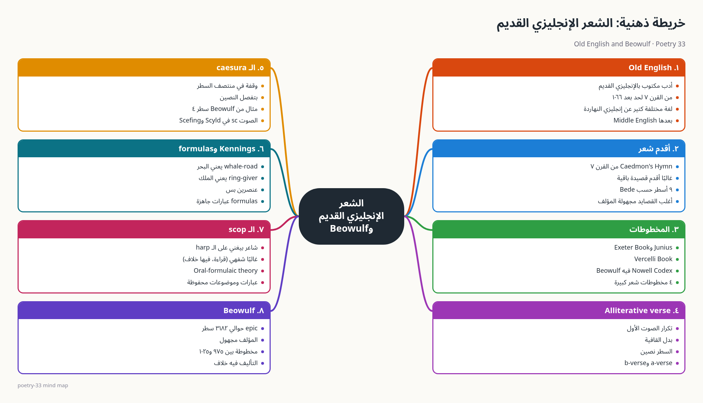

آداب الإنجليزية
: قواعد وجرامر وشعر وأساطير
⭐
0
🔥
استمر!
⚔️
الدرس ٣٣: Old English poetry، يعني الشعر الإنجليزي القديم: Beowulf وعالم الـ Anglo-Saxons
📊
المستوى: C1
الدرس 33 من 33
📖
كورس الشعر
📄 حمّل PDF الدرس
🧠 الخريطة الذهنية PDF
🧠 شوف الخريطة الذهنية للدرس

→
الدرس اللي قبله
كل دروس الكورس
الدرس اللي بعده
←